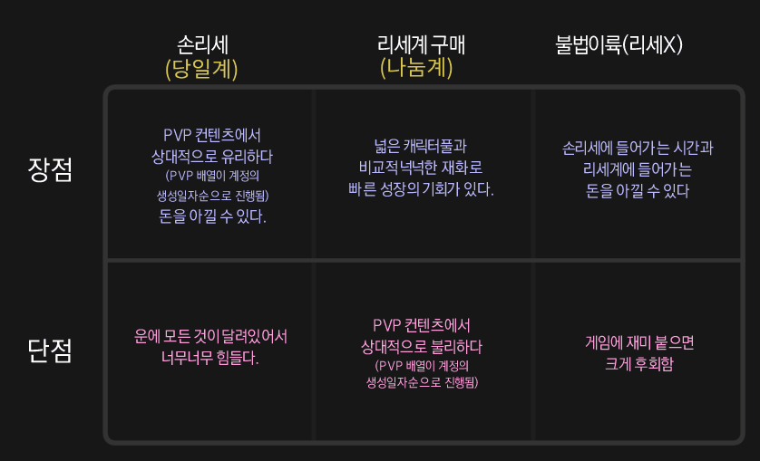
Lastest update 26.05.27
손리세는 PC클라에서만 가능함
모바일은 같은 방식으로하면 금방 막혀
계정 모아뒀다가 사료 받겠답시고 빠르게 계정 갈아타는경우가 대표적 정지사례임
1. 게임설치
니케는 블루스택이나 녹스같은 앱플사용하면 정지당함
전용 PC 클라이언트를 다운해야함
https://nikke-global.com/download/pc-download6/index.html
2. 계정 생성 방법
절대 바로 소셜(구글,페이스북 등등) 계정에 연동하면 안됨
인게임에서 연동해제를 지원하지 않는다.
레벨 인피니트 패스라는 깡계를 만들고 그걸로 리세시작
리세에 성공하면 그 계정을 소셜에 연동
2-1. 가입
PC클라 리세마라의 경우
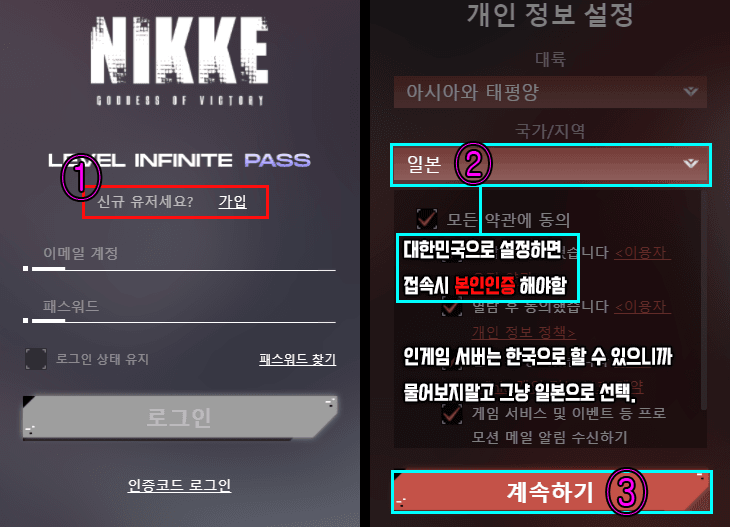
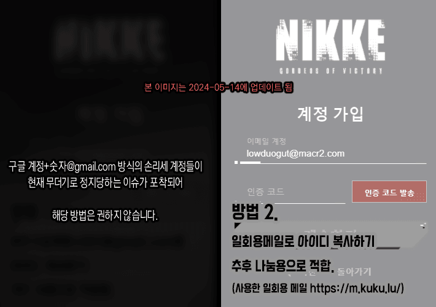
2. 머리를 좀써야하는데 용량은 적게 써도 되는 멀티리세[LINK]
모바일 리세마라의 경우 (각종 오류로 몇번 못함)
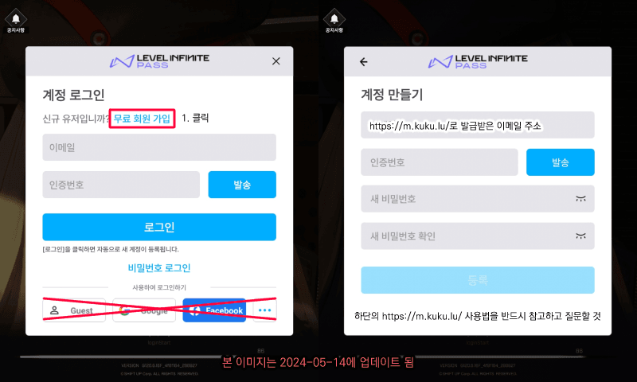
gmail 숫자계정으로 아이디 찍어내는 방식에 정지 사례가 다수 포착되어가능한 아래의 일회용 메일 사용을 권장함.
특히 하단에 Guest 로그인 버튼은 더이상 사용할수도없고 사용하면 무한로딩에 걸려서 재설치해야한다는 제보있으니 절대 클릭 금지
2-2. 일회용 메일 사용법
https://namu.wiki/w/%EC%9E%84%EC%8B%9C%20%EC%9D%B4%EB%A9%94%EC%9D%BC
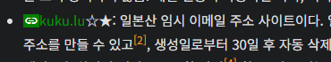
직접적으로 링크다는걸 디시가 막고있어서 사진으로 대신 첨부함
적혀있는 사이트 가서 일회용 메일을 만들꺼야
아래 그림보면서 따라하면됨
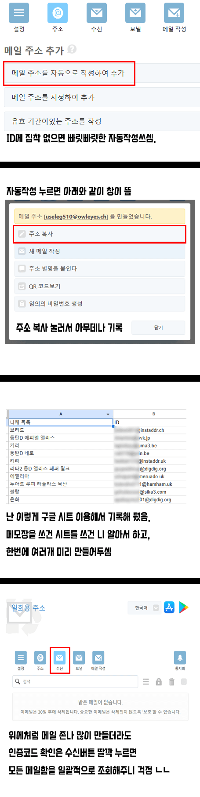
이렇게 만든 일회용 메일을 니케 회원가입용으로 쓰면됨
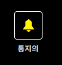
이거 눌러두면 알람이 와서 메일함 들어갈 필요도 없슴
혹시 만든 이메일 정보를 저장하고싶다면
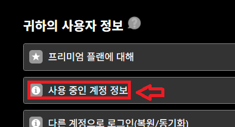
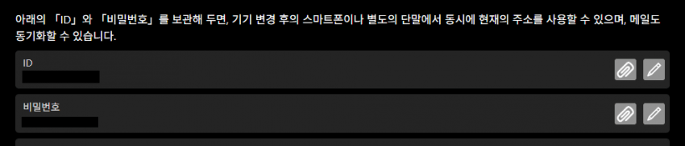
이메일 사이트에서 id 비번을 확인할 수 있음
3. 리세 시작
시작하면 바로 전투 진입할탠데 클리어와 스킵(거의 대부분의 튜토리얼 대사는 스킵 가능함.) 계속 진행하다보면
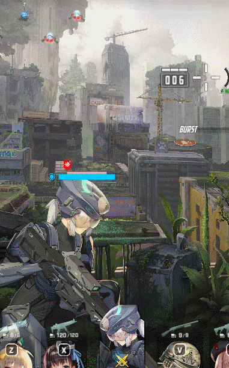
중간에 이렇게 3마리 나오는거있는데 노란머리애로 가운대에 때리면 한번에 다잡을수있음
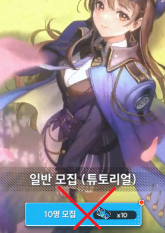
중간에 대원모집하라고떠도 뽑지마
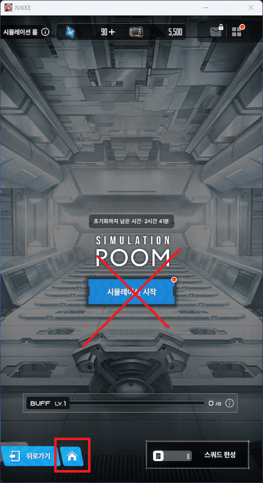
시뮬레이션 시작 누르지말고 바로 홈버튼 눌러서 로비로 나가면됨
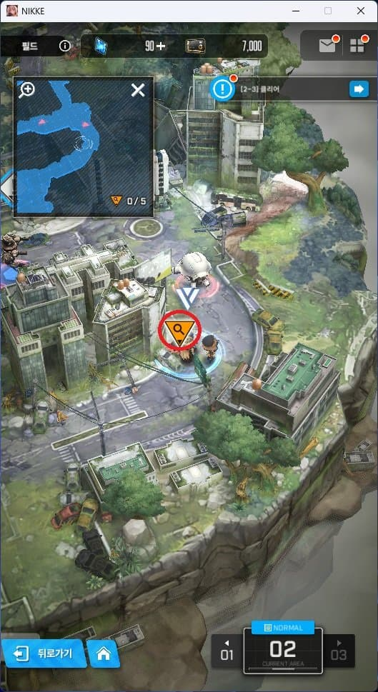
작전출격 눌러서 2-1클리어하고 사진위치에 가면 노란 역삼각형 유실물 얻을수있음이거 100쥬얼이니깐 챙겨가 여기까지해야 메일함이 열림
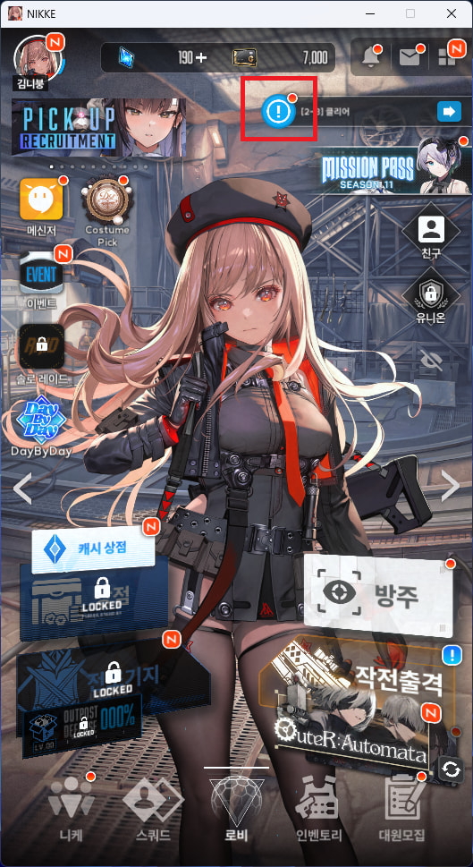
메인 로비에서 좌상단 파란 느낌표 누르면
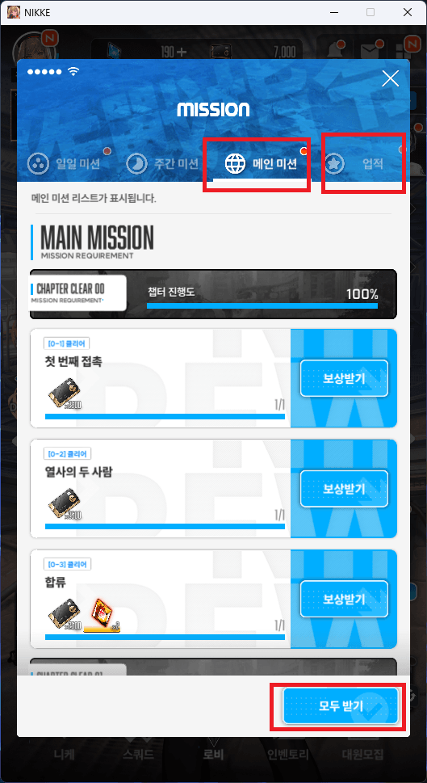
미션 창 나오는데 거기서 메인 미션 > 모두 받기 한번 해줘
그리고 나가서 니케 창으로 넘어가면(좌하단에 있음)
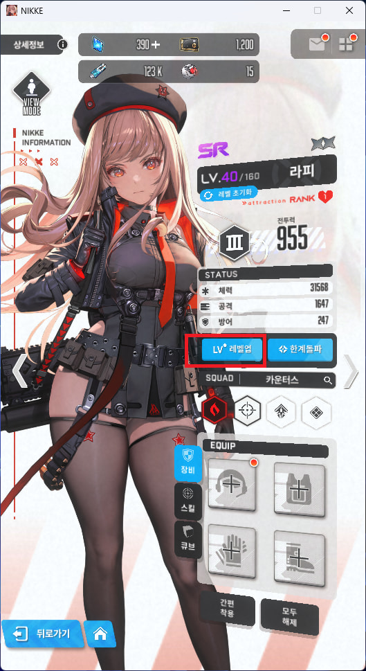
라피선택하고 레벨업 해서 40렙까지 올려줘
여기로 돌아와서 업적 보상까지 받으면 끝
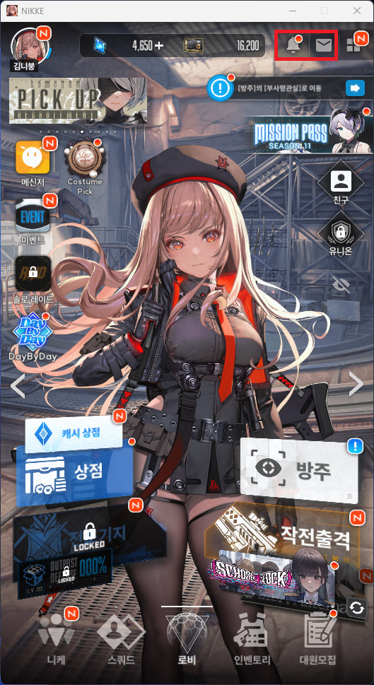
우측 상단 종모양 아이콘 눌러보면 공지사항 나와
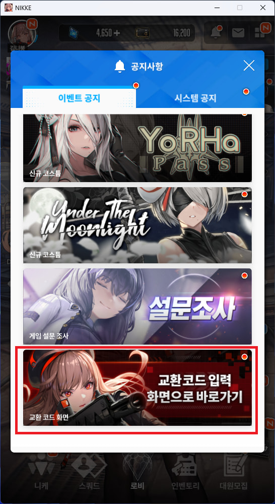
아래로 내려보면 교환코드 입력할수있음
목록은 아래 링크 참고
코드 입력하고 메일함가서 전부 받으면됨
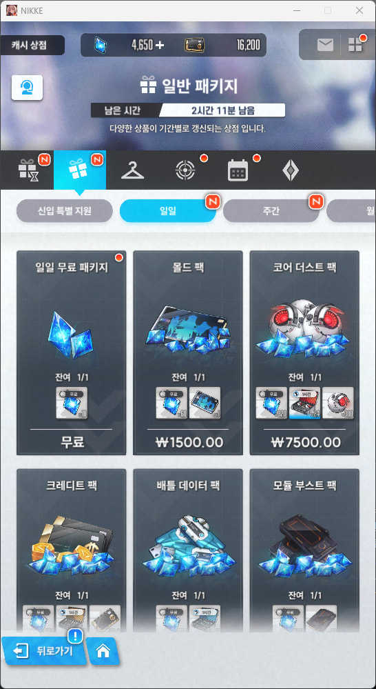
일간 주간 월간 무료 쥬얼받고
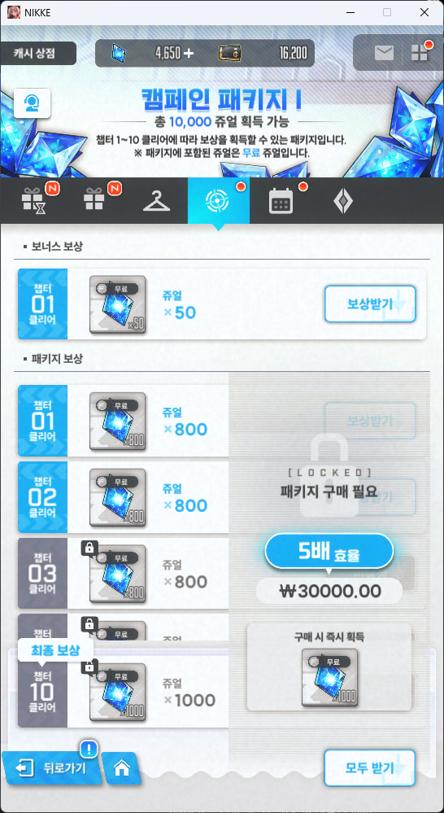
이것도 받고
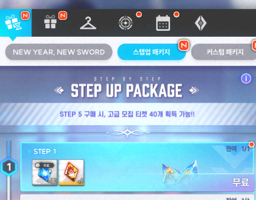
이것도 받아주삼 이제 뽑으러가면됨
튜토리얼 뽑기는하지마. 필그림 안나옴.
튜토리얼 뽑기에서 오른쪽으로 넘겨서 특수모집 10회뽑-> 이후 오른쪽으로 바로 넘기면 일반 뽑기 활성화 되어있음.
Q.뽑기 뭐해야해요????
특별뽑기티켓 -> 특별 모집
쥬얼 -> 특별 모집
일반뽑기티켓 -> 일반모집 (튜토리얼뽑기아님)
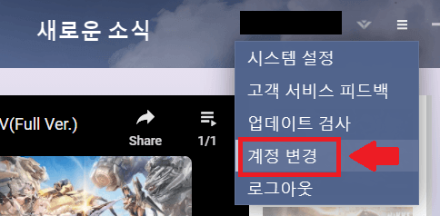
리세끝나고 우측상단 짝대기 3개누르면 계정변경 버튼있음
다른 계정으로 다시 리세하면됨
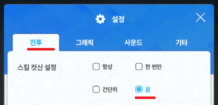
다른계정가기전에 스킬 컷신 끄고가면 다음부터 좀더 빨라짐
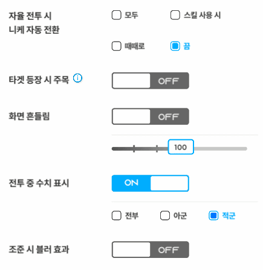
이것들도 끄고가면 좀더 쾌적해저
이륙조건
왼쪽 크라운 오른쪽 아니스
다른건 몰라도 크라운은 들고가는게 좋음
라피 / 세이렌 / 레드후드 / 나유타
흑련 / 리버렐리오 / 신데렐라 / 스노우화이트:헤비암즈 / 아니스:스타
많을수록 좋음
Q. 지금 내 서버가 어딘가요? 어떻게 바꿀수있나요?
A. 여기서 바꿀수있음, 한번 바꾸면 이후는 자동으로 설정됨
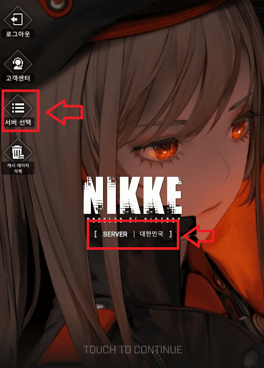
조작이 너무 빈번하다는 오류가떠요
https://gall.dcinside.com/mgallery/board/view/?id=gov&no=3520747&page=1
조작이 빈번하다는 오류가 떠요2
https://gall.dcinside.com/mgallery/board/view/?id=gov&no=4048510
손리세하다 정 지처서 더이상 하고싶지않을때 아래링크에서 계정 나눔 신청 가능
https://gall.dcinside.com/mgallery/board/view/?id=gov&no=2314239
리세 끝나서 이제 이륙하려고한다면 아래 게시글 보면 초반에 매우도움됨!
https://gall.dcinside.com/mgallery/board/view/?id=gov&no=3119805